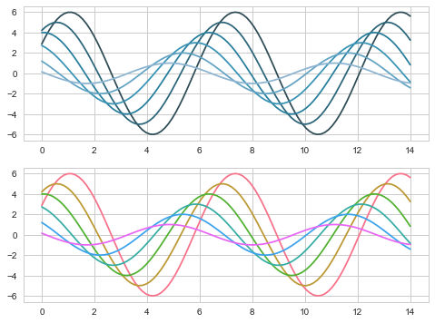

很久之前对seaborn有过一些涉及但是没有深入探究，这次有趁着有数据可视化的需求，就好好学一学
Seaborn其实是在matplotlib的基础上进行了更高级的API封装，从而使得作图更加容易，在大多数情况下使用seaborn就能做出很具有吸引力的图，为数据分析提供了很大的便利性。但是应该把Seaborn视为matplotlib的补充，而不是替代物。
图表风格（style）设置
1 | # 利用 matplotlib创建一个正弦函数及图表 |
sns.set() 设置样式参数
seaborn.set（context =’notebook’，style =’darkgrid’，palette =’deep’，font =’sans-serif’，font_scale = 1，color_codes = True，rc = None)
1 | sns.set(style='darkgrid',font_scale=1.5) |
set_style() 设置图标风格
seaborn.set_style（style = None，rc = None )
1 | # 切换seaborn图表风格 |
sns.despine() 设置坐标轴
seaborn.despine(fig=None, ax=None, top=True, right=True, left=False, bottom=False, offset=None, trim=False)
1 | # 设置图表坐标轴 |
sns.axes_style() 设置子图风格
1 | # 4、axes_style() |
设置显示比例尺度 set_context()
seaborn.set_context（context = None，font_scale = 1，rc = None )
1 | # 设置显示比例尺度 |

图标颜色设置 color_palette()
sns.color_palette(palette=None, n_colors=None, desat=None)
我们选择颜色常常依据数据特征来选择，所以下面就从
分类：彼此间差异较大连续：颜色按照顺序渐变发散：中间颜色浅，两端颜色深
三个调色板来讲解color_palette()函数
分类调色板
当你不用区分离散数据的顺序时，建议使用分类调色板
1 | # 默认6种颜色：deep, muted, pastel, bright, dark, colorblind |
圆形调色系统
当需要6中以上的颜色时，可以在圆形颜色空间中按均匀间隔画出颜色。
最常见的是使用hls颜色空间。
1 | sns.palplot(sns.color_palette('hls',8)) |
1 | data = np.random.normal(size=(10, 8)) + np.arange(8) / 2 |
- HLS色调空间：hls_palette([n_colors, h, l, s])
- HUSL色调空间：husl_palette([n_colors, h, l, s])
1 | # 设置亮度，饱和度 |
使用分类Color Brewer调色板
另一个分类色板来源于Color Brewer（同样也具有连续色板和发散色板），它也同样存在于matplotlib colormaps中，但是并没有得到很好的处理。在Seaborn中，当你调用Color Brewer分类色板时，你总能得到离散的颜色，但是这意味着它们在某一点开始了循环。
Color Brewer网站的一个很好的功能是它提供了一些关于哪些调色板是色盲安全的指导
1 | # Color Brewer颜色设置 |
使用xkcd颜色测量中的命名颜色
xkcd包含了一系列命名RGB颜色。共954种颜色，您现在可以使用xkcd_rgb字典在seaborn中引用它们：
1 | plt.plot([0, 1], [0, 1], sns.xkcd_rgb["pale red"], lw=3) |
顺序调色板
当数据范围从相对较低或不感兴趣的值到相对较高或有趣的值时，可以使用连续(顺序)调色板，在kdeplot()和heatmap()函数中常常会用到。
具有大色调偏移的色彩图往往会引入数据中不存在的不连续性，并且我们的视觉系统无法自然地将彩虹映射到诸如“高”或“低”的定量区别。结果是这些可视化最终更像是一个谜题，它们模糊了数据中的模式而不是揭示它们
所以对于顺序数据，最好使用色调最多相对微妙偏移的调色板，伴随着亮度和饱和度的大幅度变化。这种方法自然会吸引人们关注数据的相对重要部分
1 | sns.palplot(sns.color_palette("Blues")) |
顺序 cubehelix 调色板
cubehelix调色板系统既能亮度线性变化同时也能色调变化的线性色板。这意味着当转换为黑白（用于打印）或由色盲个人查看时，色彩映射中的信息将被保留。
seaborn.cubehelix_palette（n_colors = 6，start = 0，rot = 0.4，gamma = 1.0，hue = 0.8，light = 0.85，dark = 0.15，reverse = False，as_cmap = False ）
1 | # 按照线性增长计算，设置颜色 |
自定义顺序调色板
对于自定义顺序调色板的简单界面，您可以使用light_palette()或使用dark_palette()，都是由单一的颜色并生成从浅色或深色去饱和值到该颜色的渐变调色板。这些函数还伴随着启动交互式小部件以创建这些调色板的功能
seaborn.light_palette（color，n_colors = 6，reverse = False，as_cmap = False，input =’rgb’ ）
seaborn.dark_palette（color，n_colors = 6，reverse = False，as_cmap = False，input =’rgb’ ）
1 | # color: 十六进制代码，html颜色名称或input空间中的元组 |
发散的调色板
第三类调色板称为“发散”。这些用于大低值和高值都很有趣的数据。数据中通常还有明确定义的中点。例如，如果要绘制某个基线时间点的温度变化，最好使用偏差色图来显示相对减少的区域和相对增加的区域。
同样重要的是要强调使用红色和绿色应该避免，因为大量潜在的观众将无法区分它们
seaborn.diverging_palette(h_neg, h_pos, s=75, l=50, sep=10, n=6,
center=’light’, as_cmap=False)
1 | # 创建分散颜色 |
1 | plt.figure(figsize = (8,6)) |
选择调色板 choose_colorbrewer_palette()
您可以使用该choose_colorbrewer_palette()函数来播放各种颜色选项，如果希望返回值是可以传递给seaborn或matplotlib函数的colormap对象，则可以将as_cmap参数设置为True
seaborn.choose_colorbrewer_palette(data_type, as_cmap=False)
1 | sns.choose_colorbrewer_palette('q') |

1 | # Color Brewer的颜色图： |
设置默认的调色板
类似于color_palette()。set_palette()接受相同的参数，但它会更改默认的matplotlib参数，以便将调色板应用于所有绘图。
1 | # 设置调色板后，绘图创建图表 |
